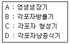

수산양식기사 (2008-07-27 기출문제)
1과목: 어류양식학
1. 빙어가 비타민 결핍으로 등이 굽어졌다면 다음 중 어느 비타민이 부족한 것으로 추정되는가?
- 비타민 B2
- 비타민 B12
- 비타민 C
- 비타민 A
(정답률: 77%)

2. 평균 100g 되는 어류종묘 10000마리에 펠렛사료 6000Kg을 공급하여 평균 600g의 어류를 수확하였다면 이때의 사료계수는?
- 0.9
- 1.2
- 1.8
- 2.4
(정답률: 87%)
3. 산란용 잉어 친어는 언제부터 암수를 분리하여 사육하여야 하는가?
- 10~11월경
- 7~8월경
- 3~4월경
- 12~1월경
(정답률: 60%)
4. 어병을 치료하기 위하여 1톤 수조에 0.2ppm의 농도로 약제를 처리하려고 할 때 필요한 약제의 양은?
- 2g
- 0.2g
- 0.2mg
- 2mg
(정답률: 65%)
5. 이스라엘 잉어(향어, Dor-70 strain)가 만들어진 방법은?
- 성전환 - 염색체공학
- 잡종화 - 선발육종
- 잡종화 - 염색체공학
- 성전환 - 선발육종
(정답률: 87%)
6. 다음 중 잉어 종묘 생산에 가장 잘 이용되는 먹이생물은?
- 키토세로스
- 크리시스
- 클로렐라
- 다프니아
(정답률: 48%)
7. 넙치의 먹이공급에 대한 설명 중 틀린 것은?
- 부화 후 10일까지의 자어에게는 주로 로티퍼를 먹이로 준다.
- 부화 10일 이후로는 주로 알테미아를 준다.
- 치어시 먹이로는 크릴, 바지락 또는 어패류의 살 등을 주어도 된다.
- 치어기에는 먹이를 하루에 1~2회, 성장하면 3~4회 정도로 준다.
(정답률: 74%)
8. 봄 수온이 15 전후에 가두리(5m x 5m x 2m) 1대서 용어 육성을 위해 잉어 50g 전후의 새끼를 수용하고자 할때 적정 마릿수는?
- 3000 ~ 4000마리
- 5000 ~ 6000마리
- 8000 ~ 9000마리
- 10000 ~ 20000마리
(정답률: 17%)
9. 일반적인 어류 양식사업의 전체 운영경비 중에서 가장 큰 비중을 차지하고 있는 것은?
- 인건비
- 종묘구입비
- 시설관리비
- 사료비
(정답률: 75%)
10. 1일 적정공급량의 먹이를 소량씩 여러 번에 나누어서 공급해 주어야 하는 어류로 가장 적합한 것은?
- 잉어
- 뱀장어
- 무지개 송어
- 방어
(정답률: 82%)
11. 여과조의 종류 중 생물 부착막 여과조가 아닌 것은?
- 활성 오니법 여과조
- 살수식 여과조
- 침수식 여과조
- 회전식 여과조
(정답률: 84%)
12. 참돔의 부화, 자어 및 치어의 사육에 대한 설명으로 틀린 것은?
- 부화는 12 ~ 23℃에서 가능하고, 부화 최적 수온은 13 ~ 14℃ 이다.
- 수정란은 20 전후에서 약 45시간 만에 부화하여 2.0 ~ 2.3mm의 자어가 된다.
- 알은 비중이 1.0245 이므로 알이 가라앉지 않도록 해수의 비중이 그 이상으로 되게 한다.
- 부화 후 3 ~ 4일이 지나면 첫 먹이를 준다.
(정답률: 56%)
13. 100g정도 되는 은연어의 해수양식을 위해 해수에 순치시킨다면 가장 적당한 해수 순치기산은?
- 1일간
- 3일간
- 7일간
- 10일간
(정답률: 58%)
14. 다음 중 콘크리트로 제작된 양어장의 특징이 아닌 것은?
- 임의의 구조물을 만들 수 있다.
- 내화, 내수성이 크다.
- 구조물의 개조가 용이하다.
- 수중공사도 가능하다.
(정답률: 80%)
15. 넙치의 자연산란 수온범위는?
- 8 ~ 10℃
- 11 ~ 17℃
- 18 ~ 22℃
- 23 ~ 25℃
(정답률: 79%)
16. 배합사료의 단백질 원료원으로 잘 이용되지 않는 것은?
- 어분
- 대두박
- 소맥분
- 육분 및 육공분
(정답률: 77%)
17. 다음 중 염분의 변화에 가장 잘 견디는 어류는?
- 틸라피아
- 방어
- 잉어
- 메기
(정답률: 77%)
18. MP사료에 대한 설명 중 틀린 것은?
- 구에 알맞게 각종원료 및 부족한 영양소 등의 합리적인 배합이 가능하다.
- 물에 뜨기 때문에 사료의 허실이 적고 관찰이 용이하다.
- 어류가 좋아하는 크기로 성형이 가능하고 기호성도 좋다.
- 보관이 어려우며 수질 악화 우려가 높다.
(정답률: 64%)
19. 뱀장어(참장어)에 대한 설명으로 잘못된 것은?
- Leptocephalus를 잡아서 기른다.
- 어미 한 마리는 700 ~ 1300만개 전후의 알을 낳는다.
- 실뱀장어는 1마리의 무게가 0.15g 정도이다.
- 수온이 27 ~ 28 정도로 높이면 잘 자란다.
(정답률: 83%)
20. 다음 중 질병을 이르키기 쉬운 방어 양식장의 조건과 가장 거리가 먼 것은?
- 담수유입이 적은 양식장
- 수용밀도가 높은 양식장
- 장기간 연작한 양식장
- 관리가 충분하지 못한 양식장
(정답률: 79%)
2과목: 무척추동물양식학
21. 대합양식장으로 적합한 조건이 아닌 것은?(오류 신고가 접수된 문제입니다. 반드시 정답과 해설을 확인하시기 바랍니다.)
- 지반이 평판하고 변동이 없는 곳
- 담수의 영향을 받지 않는 곳
- 수온 12 ~ 28를 유지하고 비중 1.014 ~ 1.024 범위를 유지하는 곳
- 조류의 소통이 좋고 대조시 5시간 이하 노출되는 곳으로부터 수심 4 ~ 6m 되는 곳
(정답률: 43%)
22. 진주조개 양성장 중 화장 어장이라고 하는 곳은?
- 채묘가 잘 되는 어장
- 진주의 빛깔이나 광택이 우수해지는 어장
- 폐사가 심하게 일어나는 어장
- 겨울철 월동이 가능한 어장
(정답률: 79%)
23. 키조개의 생태적 특징으로 옳은 것은?
- 키조개의 산란기는 6 ~ 9월이다.
- 외해나 외해의 영향을 많이 받는 곳에 주로 서식한다.
- 키조개 부유유생은 현재 알려진 조개류의 부유유생 중에서 크기가 가장 작다.
- 복원중
(정답률: 36%)
24. 노화현상이 진행 중인 양성장에 대한 시급한 대책은?
- 바닥 환경 개선
- 밀식 방지
- 양성 물량의 감축
- 충분한 산소 공급
(정답률: 34%)
25. 다음 갑각류 중 부화시간이 일반적으로 가장 긴 것은?(단, 최적 부화조건 기준)
- 대하
- 보리새우
- 닭새우
- 꽃게
(정답률: 57%)
26. 다음 동물 중 유생의 부유기간이 가장 짧은 것은?
- 우렁쉥이
- 까막전복
- 피조개
- 진주조개
(정답률: 62%)
27. 꽃게의 종묘생산에 관한 설명으로 가장 적합한 것은?
- 황색인 알을 검경하여 난(卵) 내 조에아 유생이 움직이는 알을 포란하고 있는 것을 어미로 한다.
- 2톤(1m x 2m x 1m) 크기의 탱크에 어미 10마리 정도로 수용한다.
- 부화는 보통 해지기 직전에 일어나므로 탱크 내의 해수는 지수 상태를 유지시킨다.
- 부화한 조에아 유생은 주광성이 강하am로, 이를 이용해서 건강한 것만을 종묘로 쓴다.
(정답률: 39%)
28. 진주 모패에 핵을 넣고 양성 관리까지의 취급법으로 옳은 것은?
- 수술하기 위해서는 생식 세포가 충분히 클 때까지 기다린다.
- 삽핵 위치는 생식소와 장관 및 소화 맹낭 부근을 택한다.
- 수술한 진주조개의 중간 양석은 수술장에서 비교적 먼 바다에서 한다.
- 피한 기간에도 모패를 세척하는데, 1개월에 한번 정도면 충분하다.
(정답률: 74%)
29. 큰우럭의 종묘생산과 양성에 관한 내용 중 맞는 것은?
- 부착력이 강하기 때문에 부착기로 채묘한다.
- 각장 5mm 이상이 되면 방류용 종묘로 쓸 수 있다.
- 저질은 연안 개흙질인 곳이 좋으며, 개흙질의 비율은 약 7% 이하인 곳이 알맞다.
- 방양 시 종묘의 방양 밀도는 1m2 당 50 ~ 100개체가 가장 알맞다.
(정답률: 71%)
30. 참굴 채묘장에서 따개비의 부착이 많을 때 그 부착을 최대한으로 방지하는 방법으로 가장 적합한 것은?
- 적정 참굴채묘 수심보다 채묘수심을 약 30cm 정도 높인다.
- 노출시간을 짧게 하여 채묘한
- 류수역을 형성한다.
- 조류 소통이 잘 되게 한다.
(정답률: 72%)
31. 담치의 인공종묘 생산에 관한 설명으로 옳은 것은?
- 담치의 산란 임계 온도는 15 이다.
- 산란용 어미 정시는 성비를 고려해 큰 것과 작은 것을 알맞게 확보한다. 각고 9.75cm 까지는 암컷이 현저히 많다.
- 수정이 끝난 알은 수면에 뜬다.
- 수온 15면 12시간 이내에 담륜자가 되고 산란 후 4일 이후부터는 먹이를 공급해야 한다.
(정답률: 38%)
32. 전복 치패의 먹이로 가장 부적합한 것은?
- Cocconeis sp
- Navicula sp
- Amphora sp
- Skeletonema sp
(정답률: 62%)
33. 고막류 중에서 양성장의 수심이 가장 깊은 곳에서 양성 가능한 종류는?
- 고막
- 새고막
- 피조개
- 큰이랑 피조개
(정답률: 65%)
34. 다음 생물의 식성에 관한 설명으로 틀린 것은?
- 바지락의 부유 유생은 Chlorella등의 식물플랑크톤을 먹는다.
- 전복류는 부유생활 후 저서생활로 들어가면서 다시마 등의 갈조류를 주로 먹는다.
- 게류는 부화한 다음 조에아(zoea)기부터 먹이를 먹기 시작한다.
- 성게류의 부화 유생은 미소한 규조류를 먹는다.
(정답률: 50%)
35. 가리비 바닥 양식장의 지표종이 아닌 것은?
- 아기군부
- 옆새우류
- 대형 흑히드라충류
- 개우렁쉥이류
(정답률: 59%)
36. 참전복 인공종묘생산에서 채란 및 유생관리에 관한 설명으로 틀린 것은?
- 일반적인 산란유도과정은 간출, 수온자극, 자외선조사, 해수자극 등이다.
- 자외선조사효과는 동일조사량에서 암컷이 수컷보다 빠르게 방출된다.
- 정충농도가 높이면 난막이 소실되므로 정충농도는 30만개 내외/mL가 적당하다.
- 수온 20에서 부유기간은 3 ~ 4일 내외이다.
(정답률: 74%)
37. 참굴인 경우 실제 수하 수면적의 약 몇 배 이상 되는 수면적을 확보하는 것이 좋은가?
- 5배
- 10배
- 20배
- 30배
(정답률: 61%)
38. 성숙 부유유생의 각정팽출이 가장 적은 것은?
- 대합
- 참굴
- 진주조개
- 진주담치
(정답률: 30%)
39. 온이 낮은 2월에 해삼의 소화관 상태를 가장 잘 나타낸 것은?
- 발달
- 회복
- 정체
- 쇠퇴
(정답률: 30%)
40. 양식장에서 수확한 보리새우의 효과적인 수송 방법은?
- 수온 25 ~ 26로 가온시킨 해수를 사용한다.
- 냉각시킨 톱밥을 넣은 상자를 사용한다.
- 따뜻하게 보온시킨 왕겨를 사용한다.
- 습도를 유지시켜 밀폐한 비닐주머니를 사용한다.
(정답률: 59%)
3과목: 해조류양식학
41. 인공해수로 김을 배양할 때 미량 금속이온의 흡수를 촉진시킬 목적으로 사용하는 것은?
- 비타민 B12
- 클루탐산연
- 황화나트륨
- EDTA
(정답률: 73%)
42. 2차아(二次芽)에 의한 번식이 없는 김의 종류는?
- 방사무늬김
- 참김
- 모무늬김
- 긴입돌김
(정답률: 35%)
43. 김 갯병 중 저염분의 영양하에서 기계적인 자극으로 생기는 것은?
- 구멍갯병
- 흰갯병
- 붉은갯병
- 싹갯병
(정답률: 55%)
44. 다음 중 2년생 다시마의 양식이 가능한 해황 조건은?
- 9 ~ 13의 저수온기가 길다.
- 투명도가 15m 이상 되는 시기가 많다.
- 여름 표층수온이 28 이다.
- 수심 12m 이상의 수온이 언제나 25 ~ 26 이하 이다.
(정답률: 71%)
45. 세대교번을 하지 않는 해조류는?
- 미역
- 김
- 다시마
- 청각
(정답률: 78%)
46. 미역의 채묘조건으로 틀린 것은?
- 수온 18℃ 전후
- 비중 1.020 전후
- 직사광선이 없는 밝은 곳
- 채묘시간은 1시간 이상유지
(정답률: 48%)
47. 다시마 종묘배양에 관한 설명으로 틀린 것은?
- 배우체 배양시의 수온은 16 이하가 좋다.
- 배우체는 암수로 구별된다.
- 속성으로 종묘배양시 투입하는 영양염류 중 인(P)과 질소(N)의 비는 대체로 10:1로 인을 많이 투입한다.
- 봄철에 채묘하여도 겨울철의 다시마 양식은 가능하다.
(정답률: 70%)
48. 다시마 양식의 해적생물로 가장 큰 피해를 주는 것은?
- 히드라충류
- 매생이
- 규조류
- 파래
(정답률: 79%)
49. 청각의 채묘시 대상 포자는?
- 과포자
- 접합자
- 유주자
- 수정란
(정답률: 66%)
50. 다음 보기의 기호를 사용하여 김사상체의 생장단계를 차례로 옳게 연결한 것은?

- A – B – C – D
- A – C – B – D
- A – D – C – B
- A – C – D – B
(정답률: 34%)
51. 김부류식(뜬흘림발)양식에서 잘 발생하는 갯병의 대책에 해당되지 않는 것은?
- 조기채취
- 발의 노출 수위를 높이는 장치 설치
- 냉동망 대체
- 김발을 1 ~ 2m 수심에 고정
(정답률: 43%)
52. 다음 중 김 양식장에서 일반적으로 해수교환에 가장 큰 역할을 하는 것은?
- 조석류
- 파랑류
- 취송류
- 하구류
(정답률: 60%)
53. 무기질사상체의 후기배양에서 각포자의 형성을 촉진하기 위하여 사상체를 세단'분산하는 적당한 시기는?
- 채묘하기 직전
- 채묘하기 6 ~ 7일전
- 채묘하기 30 ~ 40일전
- 채묘하기 90 ~ 100일전
(정답률: 34%)
54. 김 양식어장의 파래 구제법은?
- 채묘 초기에 발을 1시간 정도의 고노출선에 몇일 간 매어두명 파래는 죽는다.
- 파래가 5~6cm 정도 자랐을 때에는 발을 육상으로 올려서 3~4시간 건조시킨다.
- 바람이 있고, 습기가 적은 날 건조처리를 실시한다.
- 조처리 후에는 노출 상태로 1~2일 두었다가 본래의 발 높이에 매단다.
(정답률: 44%)
55. 미역 엽체의 생장은 어느 부분에서 일어나는가?
- 포자엽의 기부쪽
- 줄기의 기부쪽
- 잎의 면변부분
- 줄기에서 잎으로 이행하는 부분
(정답률: 46%)
56. 다시마 양식 시설 장소로 접합하지 않은 것은?
- 조류가 다소 빠른 곳
- 저질은 자갈, 모래, 사니질 지역
- 수심은 6 ~ 10m 정도
- 담수 유입이 잘 되는 지역
(정답률: 70%)
57. 양식법이 영양번식에 의존하는 종류는?
- 미역
- 다시마
- 김
- 톳
(정답률: 75%)
58. 김 생엽체의 흡광곡선에서 파장 500 ~ 600nm에 피크를 보여주는 주 색소는?
- 클로로필 a
- 피코시아닌
- 피코에리드린
- ß– 카로틴
(정답률: 19%)
59. 미역 배우체의 성숙과 아포체 방아의 적온은?
- 9~12℃
- 13~16℃
- 17~20℃
- 21~24℃
(정답률: 43%)
60. 채묘 직후의 김발을 무노출 상태로 관리하는 주된 이유는?
- 해적생물의 부착방지를 위하여
- 건조를 방지하기 위하여
- 광합성을 촉진하기 위하여
- 영양염의 흡수가 잘되게 하기 휘하여
(정답률: 57%)
4과목: 양식장환경
61. 다음 중 몸의 체절에 측각(parapodium)을 가지는 종류는?
- 히드라
- 불가사리
- 플라나리아
- 갯지렁이
(정답률: 41%)
62. 담수산 경골어류의 삼투압조절에 대한 설명 중 틀린 것은?
- 어류는 담수를 마시고, 창자에서도 물을 흡수한다.
- 콩팥은 잘 발달되어 있고, 사구체의 여과가 요량을 결정한다.
- 담수어류는 체내에 들어온 물을 농도가 낮은 많은 양의 오줌으로 배출한다.
- 피부에는 혈관이 적으므로 물이나 이온을 많이 통과 시키지 않는다.
(정답률: 20%)
63. 다음 연체 동물 중 분류학상 팔완류에 속하는 종류는?
- 갑오징어류
- 낙지류
- 앵무조개류
- 꼴뚜기류
(정답률: 50%)
64. 해산 경골어류에서 삼투조절을 위하여 해수로 부터 흡수된 과잉의 Na, K, Cl 등의 성분을 배출하는 기관은?
- 피부
- 창자
- 콩팥
- 아가미
(정답률: 48%)
65. 다음 중 방사능의 수가 가장 많은 것은?
- 새고막
- 큰이랑 피조개
- 피조개
- 고막
(정답률: 38%)
66. 홍조류인 우뭇가사리가 다시 성장하기 시작하는 계절은?
- 봄
- 여름
- 가을
- 겨울
(정답률: 15%)
67. 다음 중 김의 과포자가 생성되는 곳은?
- 사상체
- 성숙한 엽체
- 중성포자
- 유엽
(정답률: 24%)
68. 어류의 유생기에서 몸 표면의 반문과 색깔 등을 제외하면 급속히 성어의 형태적 특징을 닮아가기는 하나 아직도 친어와는 차이가 많은 단계는?
- 자어전기
- 자어후기
- 치어기
- 미성어기
(정답률: 42%)
69. 수중 식물의 광합성을 활발히 진행할 때 수중의 수소이온 농도(pH)의 변화는?
- 증가한다.
- 감소한다.
- 변하지 않는다.
- 약간 증가하다가 감소한다.
(정답률: 56%)
70. 다음 어류 중 머리 지느러미를 가지고 있는 종류는?
- 돌묵상어
- 매가오리
- 성대
- 꽃갈치
(정답률: 20%)
71. 어류의 혈액 내 헤모클로빈은 산소와 결합속도에서 환경수의 pH와의 관계 설명으로 옳은 것은?
- pH의 변화는 산소와의 친화력에 영향을 미치지 않는다.
- pH가 낮을수록 산소와의 친화력은 급속히 커졌다가 다시 작아진다.
- pH가 낮을수록 산소와의 친화력은 작아진다.
- pH가 높아짐에 따라 산소와의 친화력은 처음에는 작아지지만 나중에는 커진다.
(정답률: 56%)
72. 다음 중 머리와 가슴이 합쳐져 두흉부를 형성하고, 몸은 체절화 되어있는 종류는?
- 대하
- 주꾸미
- 참전복
- 진주조개
(정답률: 43%)
73. 다음 어류 중 성장 후 만 1년에 산란하고 죽는 것은?
- 바다빙어
- 뱀장어
- 뱅어
- 붕장어
(정답률: 19%)
74. 어류의 표피에 대한 설명 중 틀린 것은?
- 어류의 표피는 몸의 가장 바깥층에 위치하고, 발생학적으로는 중배엽에서 유래한 다층 편평 상피로 구성되어있다.
- 다층 편평 상피세포로 되어있는 표피는 원구류 이상의 척추동물에서 볼 수 있는 특징의 하나이다.
- 표피세포의 두께는 년령에 따라 또는 몸의 부위에 따라 다르다.
- 일반적으로 비늘이 없는 원구류나 미꾸라지, 뱀장어 및 배도라치 같은 어류는 점액선이 잘 발달되어 있다.
(정답률: 13%)
75. 해산 갑각류 중 대하의 수명은?
- 1년
- 3년
- 4년
- 6년
(정답률: 43%)
76. 다음 중 진화상으로 보아 가장 원시적인 어종은?
- 붕장어
- 청어
- 멸치
- 붕어
(정답률: 38%)
77. 원구류의 난소는 몇 개인가?
- 1개
- 2개
- 3개
- 4개
(정답률: 55%)
78. 어류의 구강선에서 혈액 응고를 방지하고 근육을 녹이는 성분을 분비하는 종류는?
- 칠갑상어
- 칠성장어
- 뱀장어
- 볼락
(정답률: 58%)
79. 해성인 종류는?
- 참가리비
- 백합
- 동죽
- 피조개
(정답률: 29%)
80. 다음 중 두족류인 문어의 해적동물은?
- 전복
- 공치
- 닭새우
- 피뿔고동
(정답률: 43%)
5과목: 수산질병학
81. 여과조가 가장 효과적으로 작용하는 조건은?
- 새로 만든 여과조에 깨끗한 찬물이 많이 들어갈 때
- 여과조에 오수생물이 많이 발생한 상태일 때
- 여과조를 깨끗이 청소하고 난 다음
- 사육조에 생물을 적게 수용했을 때
(정답률: 50%)
82. 다음 중 관계없는 것은?
- 외부로부터 영양염류의 유입 때문에 일어난다.
- 조류의 생산량이 급히 증가한다.
- 조류의 번식결과 저층수의 용존산소량이 급히 증가한다.
- 조류들의 사후분해결과 영양염류를 제공하게 된다.
(정답률: 47%)
83. 해수어의 육상수조식 양식장에서 사육수를 살균하는데 사용하는 오존이 해수 중의 어떤 용존 물질과 결합하면 독성을 나타내는가?
- 요오드
- 질소
- 탄소
- 카드뮴
(정답률: 53%)
84. 제오라이트를 재생 시킬 때 일반적으로 사용하는것은?
- 메틸알콜
- 소금물
- 완충용액
- 중성세제
(정답률: 32%)
85. 질산화 과정 중에 암모니아를 아질산염으로 산화시키는 세균은?
- 니트로소모나스
- 니트로박터
- 슈도모나스
- 애로모나스
(정답률: 63%)
86. pH5인 수계는 pH7인 수계보다 몇 배 더 산성인가?
- 2배
- 10배
- 100배
- 200배
(정답률: 61%)
87. 순환식 사육장치에 반드시 필요한 구성물이 아닌 것은?
- 사육조
- 고형 오물의 제거 시설
- 생물 여과조
- 저수지
(정답률: 64%)
88. 천해양식장의 자가오염 원인으로 가장 주요한 것은?
- 적조
- 사료
- 생활하수
- 농약
(정답률: 50%)
89. 기포에 의해 고형물을 제거하는 포말분리에 관한설명으로 틀린 것은?
- 입자상 물질이나 용존 물질을 상승하는 기포에 부착시켜 분리시키는 방법이다.
- 기포표면에 하나 또는 그 이상의 용질이 흡착됨에 의해 용존성 물질을 분리 또는 농축하는 공정을 하게 된다.
- 계면 활성물질의 용질을 제거하는데 응용할 수 있을 뿐만 아니라, 킬레이트화제 또는 화학물질을 첨가함으로써 계면활성을 갖는 용질들을 제거하는데도 응용 가능하다.
- 용질의 농도가 높을 경우에 더 효과적이며, pH의 변화, 용매 및 기타 변수들에 민감한 생물학적 물질들을 농축, 분리하는데도 유용하다.
(정답률: 23%)
90. 양어지의 pH 안정을 위해서 가장 중요한 역할을 하는 성분은?
- 탄산가스
- 중탄산염
- 탄산칼륨
- 염분
(정답률: 53%)
91. 다음 중 완충착용이 가장 큰 물은?
- 호소수
- 기수
- 해수
- 우수
(정답률: 47%)
92. 물의 경도에 관한 설명 중 틀린 것은?
- 수중의 Ca2+, Mg2+합계량을 이에 대응하는 탄산칼슘을 ppm으로 표시한다.
- EDTA로 적정해서 구할 수 있다.
- 물을 끊여주면 탄산염으로 침전됨으로 HCO3- 이온을 모두 제거할 수 있다.
- 경도가 높은 물은 보일러 용수로 사용하기 적합하지 않다.
(정답률: 50%)
93. 일반적으로 양어지에서 가스병을 예방할 수 있는 질소가스의 상한농도는?
- 100%
- 110%
- 150%
- 160%
(정답률: 57%)
94. 정수식 못 양식에서 어류의 수용밀도를 정하는 것은?
- 물의 교환율
- 수심
- 면적
- 주수구의 크기
(정답률: 40%)
95. 암모니아 독성에 대한 설명 중 맞는 것은?
- 암모니아의 독성은 pH가 증가 할수록 커진다.
- 암모니아의 독성은 이온성 암모니아량에 달려있다.
- 암모니아의 독성은 용존산소와는 관계가 없다.
- 암모니아 배설동물은 암모니아 독성의 영향이 없다.
(정답률: 62%)
96. 지수 양어지에서용존산소의 저하와 더불어 발생하는 가장 유독한 가스는?
- 탄산가스
- 이산화탄소
- 황화수소
- 일산화탄소
(정답률: 58%)
97. 무지개송어 양식에서 수로형사육지의 구조 설명으로 옳은 것은?
- 치어용 사육지는 수심을 60cm 정도로 하고 바닥의 경사는 1/10 정도로 한다.
- 치어용사육지는 폭을 1.5m 또는 그 이하로 하고 수심은 최고 30cm를 넘지 않는 것이 좋다.
- 성어사육용 양성지는 폭을 1.5m 이내로 하고 깊이는 10 ~ 30m 의 범위 내에서 한다.
- 수면에서 못둑 상단까지는 높이가 적어도 60cm 정도는 되어야 한다.
(정답률: 35%)
98. 가장 바람직한 적조 방지의 근본 대책은?
- 적조생물제거
- 공장폐수 제거
- 오염물질의 해양유입차단
- 유류오염 방지
(정답률: 48%)
99. 수질환경기준상 수산용수 1급에 해당하는 BOD 값은?
- 3mg/L 이하
- 5mg/L 이하
- 10mg/L 이하
- 15mg/L 이하
(정답률: 42%)
100. 물 속에서의 동물의 산소소비에 대한 설명 중 가장 거리가 먼 것은?
- 동물의 산소소비는 온도가 상승함에 따라 증가한다.
- 동물 개체당 산소소비량은 큰 개체일수록 많다.
- 단위체중당 산소소비량은 대형으로 성장할수록 많다.
- 먹이를 소화하는 동안은 더 많은 산소를 소비한다.
(정답률: 56%)